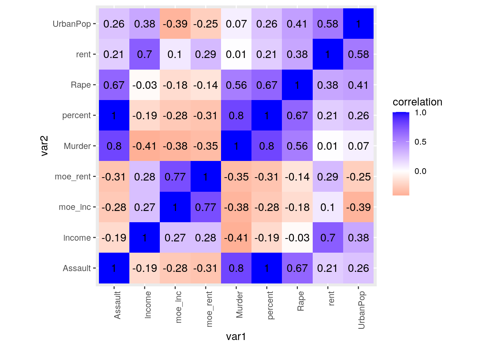
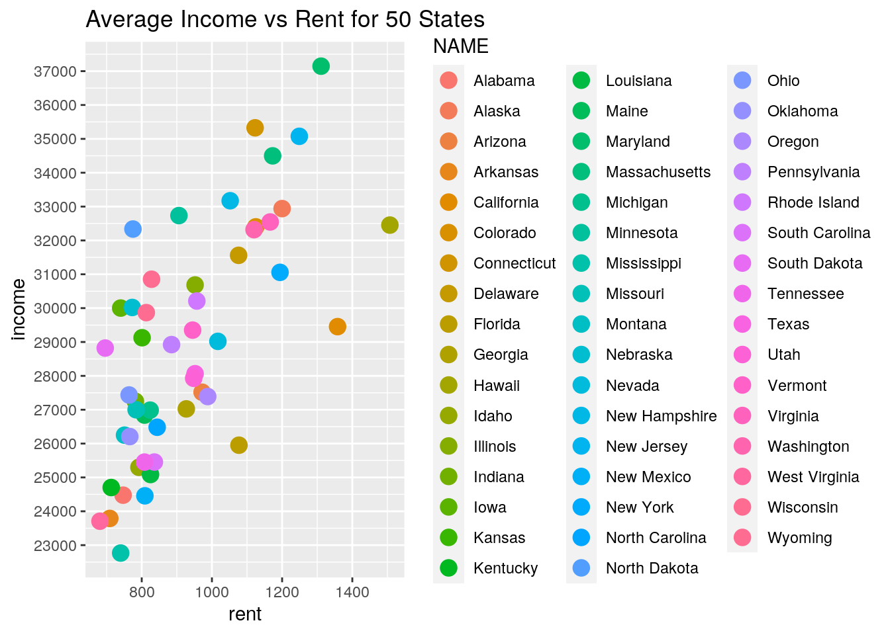
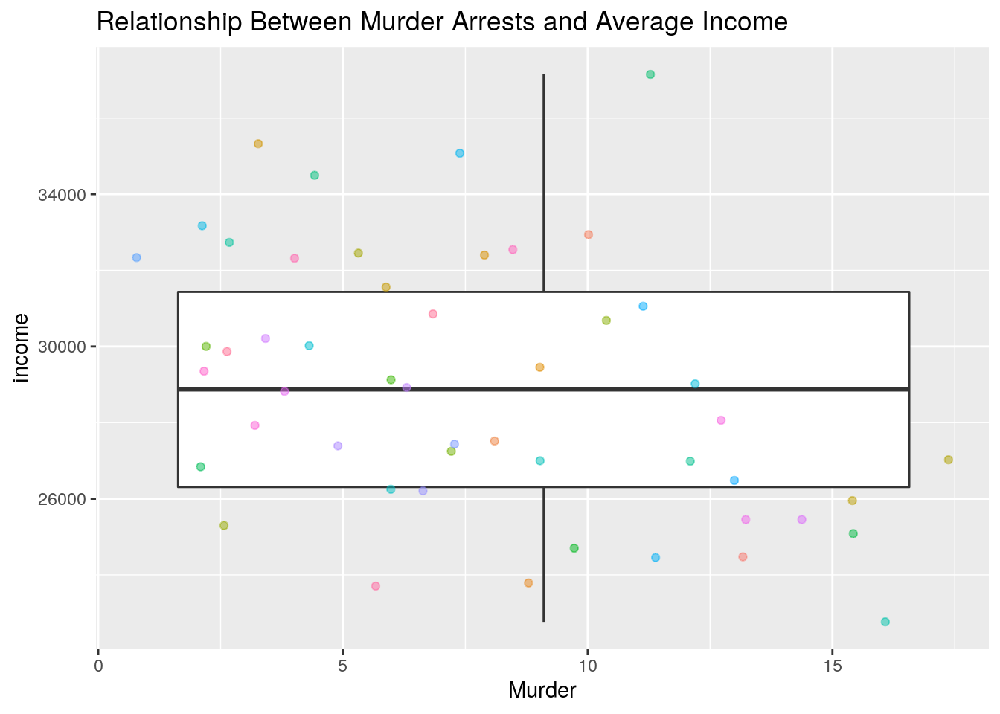
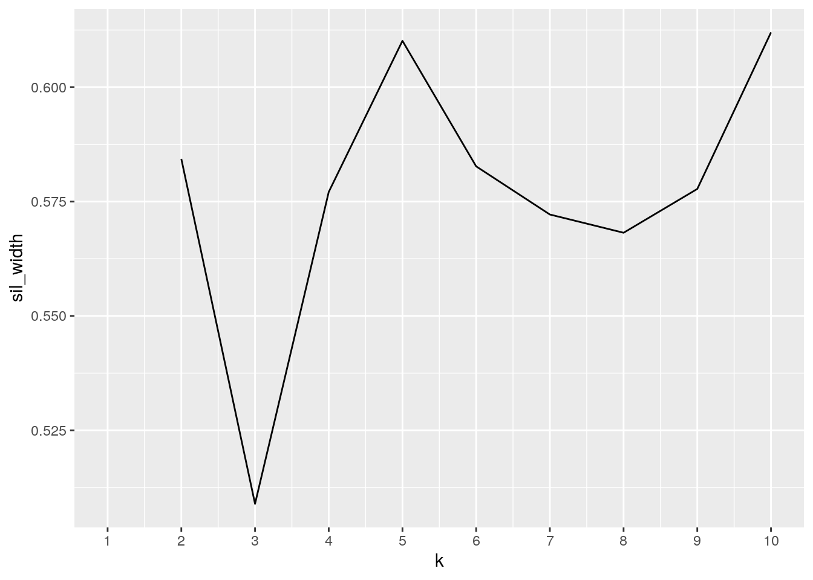

This is an R Markdown document. Markdown is a simple formatting syntax for authoring HTML, PDF, and MS Word documents. For more details on using R Markdown see http://rmarkdown.rstudio.com.
Introduction
The data sets I have chosen are USArrests and us_rent_income. USArrests includes murder, assault, and rape arrests per 100,000 residents in each state, as well as the percent urban population. The us_rent_income includes the estimated value for the median monthly rent and yearly incomes for each state, as well as the margin of error. I acquired these data sets by looking up all the data sets on in all the packages installed in the server. They were interesting to me because topics of the injustice of the criminal system and trends you see with the people who do end up going to jail is a problem in society. I expect to see that states with lower median incomes have higher rates of arrests. I also expect to see rent and incomes having a high correlation.
Tidying*
library(dplyr)
library(tidyr)
usinrent <- us_rent_income %>% mutate(third_col = moe) %>% mutate_at(c("third_col"),
list(lead), n = 1) %>% rename(moe_inc = moe, moe_rent = third_col) %>%
pivot_wider(names_from = "variable", values_from = "estimate")
usinrent1 <- usinrent %>% mutate(rent = lead(rent)) %>% dplyr::filter(row_number()%%2 ==
1)
glimpse(usinrent1)## Rows: 52
## Columns: 6
## $ GEOID <chr> "01", "02", "04", "05", "06", "08", "09", "10", "11", "12", …
## $ NAME <chr> "Alabama", "Alaska", "Arizona", "Arkansas", "California", "C…
## $ moe_inc <dbl> 136, 508, 148, 165, 109, 109, 195, 247, 681, 70, 106, 218, 2…
## $ moe_rent <dbl> 3, 13, 4, 5, 3, 5, 5, 10, 17, 3, 3, 18, 7, 3, 3, 4, 5, 4, 4,…
## $ income <dbl> 24476, 32940, 27517, 23789, 29454, 32401, 35326, 31560, 4319…
## $ rent <dbl> 747, 1200, 972, 709, 1358, 1125, 1123, 1076, 1424, 1077, 927…I needed to tidy the us_rent_income data set before merging both data sets. First, I wanted to make every other row into a separate column from the “column” by using mutate and renaming it to have two columns for the moe rent and moe income. After that, I used pivot_wider to make every variable a column by moving the rent and income variable from the “variable” column into their own columns with their variables. I then shifted the cells in column rent up by one and deleted the even rows that had NA as a value.
USArrests1 <- tibble::rownames_to_column(USArrests, "NAME")
glimpse(USArrests1)## Rows: 50
## Columns: 5
## $ NAME <chr> "Alabama", "Alaska", "Arizona", "Arkansas", "California", "C…
## $ Murder <dbl> 13.2, 10.0, 8.1, 8.8, 9.0, 7.9, 3.3, 5.9, 15.4, 17.4, 5.3, 2…
## $ Assault <int> 236, 263, 294, 190, 276, 204, 110, 238, 335, 211, 46, 120, 2…
## $ UrbanPop <int> 58, 48, 80, 50, 91, 78, 77, 72, 80, 60, 83, 54, 83, 65, 57, …
## $ Rape <dbl> 21.2, 44.5, 31.0, 19.5, 40.6, 38.7, 11.1, 15.8, 31.9, 25.8, …I then had to tidy USArrests data set so that the observations(rows) would become a single column in order for both datasets to have a common variable to join.
Joining
bothdata <- usinrent1 %>% inner_join(USArrests1, by = "NAME")
glimpse(bothdata)## Rows: 50
## Columns: 10
## $ GEOID <chr> "01", "02", "04", "05", "06", "08", "09", "10", "12", "13", …
## $ NAME <chr> "Alabama", "Alaska", "Arizona", "Arkansas", "California", "C…
## $ moe_inc <dbl> 136, 508, 148, 165, 109, 109, 195, 247, 70, 106, 218, 208, 8…
## $ moe_rent <dbl> 3, 13, 4, 5, 3, 5, 5, 10, 3, 3, 18, 7, 3, 3, 4, 5, 4, 4, 7, …
## $ income <dbl> 24476, 32940, 27517, 23789, 29454, 32401, 35326, 31560, 2595…
## $ rent <dbl> 747, 1200, 972, 709, 1358, 1125, 1123, 1076, 1077, 927, 1507…
## $ Murder <dbl> 13.2, 10.0, 8.1, 8.8, 9.0, 7.9, 3.3, 5.9, 15.4, 17.4, 5.3, 2…
## $ Assault <int> 236, 263, 294, 190, 276, 204, 110, 238, 335, 211, 46, 120, 2…
## $ UrbanPop <int> 58, 48, 80, 50, 91, 78, 77, 72, 80, 60, 83, 54, 83, 65, 57, …
## $ Rape <dbl> 21.2, 44.5, 31.0, 19.5, 40.6, 38.7, 11.1, 15.8, 31.9, 25.8, …There were 52 observations in the usinrent1 and 50 observartions in USArrests. I used inner join so that all the rows with NA’s would be dropped. The data set usinrent1 included District of Columbia and Puerto Rico and USArrests1 didn’t, so inner join fixed this so that the joined data set has 50 states with no NA cells.
Wrangling
bothdata1 <- bothdata %>% mutate(percent = (Assault/1e+05))
bothdata1 <- subset(bothdata1, select = -c(GEOID))
bothdata11 <- bothdata1 %>% group_by(NAME) %>% arrange(desc(Murder))
bothdata12 <- bothdata1 %>% group_by(NAME) %>% arrange(desc(income))
bothdata2 <- bothdata1 %>% select(NAME, UrbanPop) %>% filter(UrbanPop <=
50)
glimpse(bothdata2)## Rows: 9
## Columns: 2
## $ NAME <chr> "Alaska", "Arkansas", "Mississippi", "North Carolina", "Nort…
## $ UrbanPop <int> 48, 50, 44, 45, 44, 48, 45, 32, 39I used ‘mutate’ to create a new column of the percentage of urban population for each state. The ‘select’ function was used to choose certain columns, and ‘arrange’ arranged the data in descending order. I thought it was interesting that Mississippi has the lowest median yearly income and the second highest murder rates. However Nevada has the highest rape cases and North Carolina has the highest assault cases. I used select and filter so that I can view what states have an urban population percentage equal or lower than 50%.
bothdata1 %>% summarise_all(n_distinct)## # A tibble: 1 x 10
## NAME moe_inc moe_rent income rent Murder Assault UrbanPop Rape percent
## <int> <int> <int> <int> <int> <int> <int> <int> <int> <int>
## 1 50 45 11 50 47 43 45 36 48 45summary(bothdata1)## NAME moe_inc moe_rent income
## Length:50 Min. : 69.0 Min. : 2.00 Min. :22766
## Class :character 1st Qu.:113.0 1st Qu.: 3.00 1st Qu.:26307
## Mode :character Median :153.5 Median : 4.00 Median :28872
## Mean :177.3 Mean : 5.38 Mean :28908
## 3rd Qu.:208.0 3rd Qu.: 6.00 3rd Qu.:31434
## Max. :508.0 Max. :18.00 Max. :37147
## rent Murder Assault UrbanPop
## Min. : 681.0 Min. : 0.800 Min. : 45.0 Min. :32.00
## 1st Qu.: 782.5 1st Qu.: 4.075 1st Qu.:109.0 1st Qu.:54.50
## Median : 864.5 Median : 7.250 Median :159.0 Median :66.00
## Mean : 931.8 Mean : 7.788 Mean :170.8 Mean :65.54
## 3rd Qu.:1070.0 3rd Qu.:11.250 3rd Qu.:249.0 3rd Qu.:77.75
## Max. :1507.0 Max. :17.400 Max. :337.0 Max. :91.00
## Rape percent
## Min. : 7.30 Min. :0.000450
## 1st Qu.:15.07 1st Qu.:0.001090
## Median :20.10 Median :0.001590
## Mean :21.23 Mean :0.001708
## 3rd Qu.:26.18 3rd Qu.:0.002490
## Max. :46.00 Max. :0.003370Based on the summarized data, it was not surprising that assault arrests has the highest minimum value compared to murder and rape arrests. It also has the highest maximum value. It was surprising that in one of the states the median rent is as low as 681.
Visualizing
cormat <- bothdata1 %>% select_if(is.numeric) %>% cor(use = "pair")
glimpse(cormat)## num [1:9, 1:9] 1 0.7698 0.2746 0.0961 -0.3846 ...
## - attr(*, "dimnames")=List of 2
## ..$ : chr [1:9] "moe_inc" "moe_rent" "income" "rent" ...
## ..$ : chr [1:9] "moe_inc" "moe_rent" "income" "rent" ...Above I found the correlations of all numeric values.
library(tidyverse)
tidycor <- cormat %>% as.data.frame %>% rownames_to_column("var1") %>%
pivot_longer(-1, names_to = "var2", values_to = "correlation")
glimpse(tidycor)## Rows: 81
## Columns: 3
## $ var1 <chr> "moe_inc", "moe_inc", "moe_inc", "moe_inc", "moe_inc", "m…
## $ var2 <chr> "moe_inc", "moe_rent", "income", "rent", "Murder", "Assau…
## $ correlation <dbl> 1.00000000, 0.76975873, 0.27464541, 0.09611554, -0.384597…I made a correlation matrix of the numeric variables titled cormat, and then tidyed the correlations that’s titled tidycor.
tidycor %>% ggplot(aes(var1, var2, fill = correlation)) + geom_tile() +
scale_fill_gradient2(low = "red", mid = "white", high = "blue") +
geom_text(aes(label = round(correlation, 2)), color = "black",
size = 4) + theme(axis.text.x = element_text(angle = 90,
hjust = 1)) + coord_fixed() In the correlation heatmap, the biggest correlations are for murder and assault arrests and percent of urban population and murder arrests. I expected to see that states with high murder arrests also have high assault arrests. The correlation heatmap also shows that rent and income are correlated as well, which makes sense that states with higher incomes would be able to pay higher rent. There seems to be no correlation between rent and Murder arrests, Rape or income, or Murder arrests and UrbanPop. This was a surprising result to me.
ggplot(data = bothdata, aes(x = rent, y = income)) + geom_point(size = 4,
aes(color = NAME), stat = "summary") + ggtitle("Average Income vs Rent for 50 States") +
scale_y_continuous(breaks = seq(20000, 38000, 1000)) As expected, there seems to be some trend that the higher the income, the more rent will be. Based on the graph, it seems like Hawaii has the highest median rent, but the income is not as high. Maryland has a high median income, but the rent is not as high as in Hawaii. I expected to see that California had a very high rent, but it had an even lower income than Maryland despite them having similar median rent values.
ggplot(bothdata, aes(x = Murder, y = income)) + geom_boxplot() +
geom_jitter(alpha = 0.5, aes(color = NAME)) + ggtitle("Relationship Between Murder Arrests and Average Income") +
theme(legend.position = "none")
As you can see on the boxplot, there’s many states that are outliers and don’t fall in line with the boxplot. I wanted to use these variables because I originally thought that there would a relationship between these variables, but there was small negative correlation.
Dimensionality Reduction
library(cluster)
clust_dat <- bothdata %>% dplyr::select("income", "Murder", "UrbanPop")
pam1 <- clust_dat %>% scale() %>% pam(k = 2)
pam1## Medoids:
## ID income Murder UrbanPop
## [1,] 42 -1.01512291 1.2425641 -0.45182086
## [2,] 16 0.06403868 -0.4105145 0.03177945
## Clustering vector:
## [1] 1 2 2 1 2 2 2 2 1 1 2 2 2 2 2 2 1 1 2 2 2 1 2 1 2 2 2 2 2 2 1 2 1 2 2 2 2 2
## [39] 2 1 2 1 1 2 2 2 2 1 2 2
## Objective function:
## build swap
## 1.287034 1.287034
##
## Available components:
## [1] "medoids" "id.med" "clustering" "objective" "isolation"
## [6] "clusinfo" "silinfo" "diss" "call" "data"I used PAM to create two clusters for my numeric values because I thought that was the best estimate. Below, I performed the function that would pick the best cluster number. The Mediods are the inital cluster centers
pam1$silinfo$avg.width## [1] 0.3265507pam_dat <- bothdata %>% select("income", "Murder", "UrbanPop")
sil_width <- vector()
for (i in 2:10) {
pam_fit <- pam(pam_dat, k = i)
sil_width[i] <- pam_fit$silinfo$avg.width
}
ggplot() + geom_line(aes(x = 1:10, y = sil_width)) + scale_x_continuous(name = "k",
breaks = 1:10)
Based on the silhouette width, the number of clusters should be 2. The higher the silhouette width, the more cohesive and separated the clusters are.
library(plotly)
pamclust <- clust_dat %>% mutate(cluster = as.factor(pam1$clustering))
pamclust %>% plot_ly(x = ~income, y = ~Murder, z = ~UrbanPop,
color = ~cluster, type = "scatter3d", mode = "markers") %>%
layout(autosize = F, width = 900, height = 400)